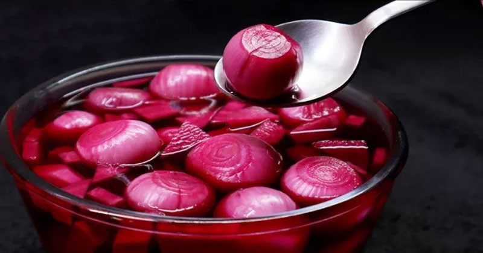

Sirka Wala Pyaaz

Description
condiments or pickle recipes are an essential and integral part of our cuisine. it can be made with different ingredients and vegetables which is generally stored and preserved in saltwater.
Ingredients
- 18 pearl onions
- 1 inch ginger (julienne)
- 2 chilli (chopped)
- 1 tbsp salt
- 1 inch cinnamon
- 5 cloves
- 1 cup vinegar
Steps
- firstly, peel the skin of small onions without cutting into half.
- transfer the small onions into the large glass jar
- add 2 chilli and 1 tbsp salt.
- in a saucepan take 1 cup water and add 1 inch cinnamon, 1 tsp pepper, 5 cloves and ¼ beetroot.
- alio, add 1 cup vinegar and close the jar.
- rest for 24 hours allowing to seep the juice into onions.